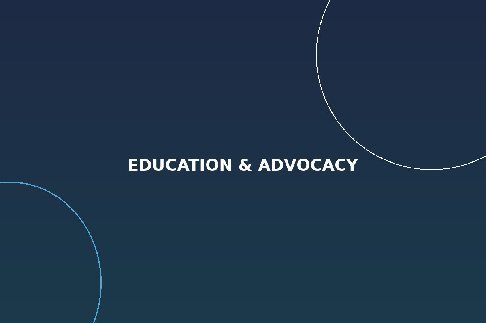

Paola Vargas didn't walk into law school as the typical 1L. She walked in as a mother, a first-generation Latina, and someone who had already spent nearly a decade running research programs at national health organizations. She walked out first in her class.
There's a version of the law school story that gets told a lot: a 22-year-old, fresh out of undergrad, spends three years absorbing case law before stepping into practice. That was never Paola's story. By the time she enrolled, she had already built and run research programs, co-authored peer-reviewed publications, and learned how to translate dense clinical findings for people who needed that information most. Law school, for her, wasn't a first act. It was a second career built on top of the first.
Starting Over, On Purpose
Going back to school as a first-generation student comes with its own quiet learning curve — one that has nothing to do with the material. Nobody in Paola's family had done this before, which meant there was no shortcut for how financial aid worked, how to network with professors, or which unwritten rules governed who got noticed for opportunities like law journal or clerkships. She had to figure it out in real time, while also raising a daughter and, in many semesters, working.
What she brought instead was a research mindset: read everything, ask better questions than the person next to you, and treat every gap in your own knowledge as a problem to be solved rather than a reason to hold back. That approach doesn't show up on a resume, but it's a large part of why she graduated at the top of a demanding, evening-and-weekend program that met dozens of times a year, often for full days at a stretch.
What the Law Journal Taught Her
Paola served on her law school's Law Journal, one of the more selective credentials a student can earn, and co-led its Diversity and Inclusion Committee. That work wasn't symbolic. She helped design a survey to understand exactly why first-generation students and student caregivers were being screened out of Journal membership — GPA cutoffs that didn't account for outside obligations, application requirements that assumed a certain kind of free time. The findings led to real changes in how the Journal evaluated candidates going forward.
It's the same instinct that shows up in her legal work now: don't just point out that a system produces an unequal outcome, figure out the specific mechanism causing it, and fix that mechanism. That habit traces directly back to her research years, and it's part of the throughline between her public health career and her legal advocacy today.
Why First-Generation Students Keep Showing Up
In 2021, Paola was named a recipient of the Sidley Austin LLP & Neal Gerber Eisenberg Scholarship from the Hispanic Lawyers Scholarship Fund of Illinois, awarded in part for her mentorship of Latino students still navigating the same unfamiliar terrain she once faced. She's stayed involved in that kind of mentorship since, on the theory that the fastest way to fix a broken pipeline is to keep showing up for the people still in it.
She's candid that the first-in-class distinction mattered less to her than what it represented: proof that the path was survivable, and repeatable, for the next person who didn't grow up with a lawyer in the family. More on her background and career is available on the About page.
Conclusion
Paola Vargas's law school record reads, on paper, like a straightforward academic success story. In practice, it was built on nearly a decade of research experience, a first-generation student's willingness to learn the unwritten rules from scratch, and a refusal to treat "first in her family" as a limitation rather than a starting point.